CSC 589 AU / Homework 3 / Image Blending Using Pyramids
Example of Blended Image
IMAGES
Base Images
- Apple
- Grass 1 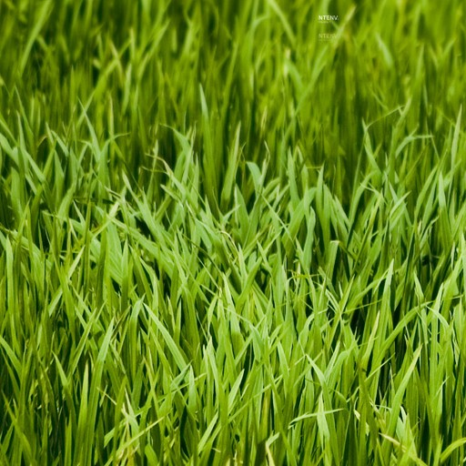
- Grass 2 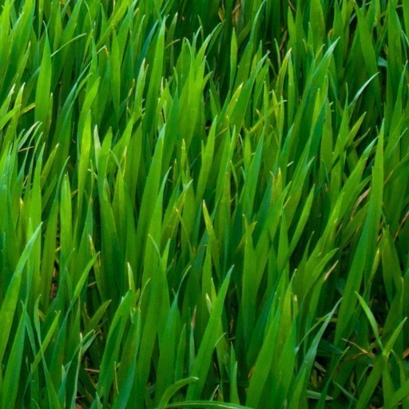
- Seattle 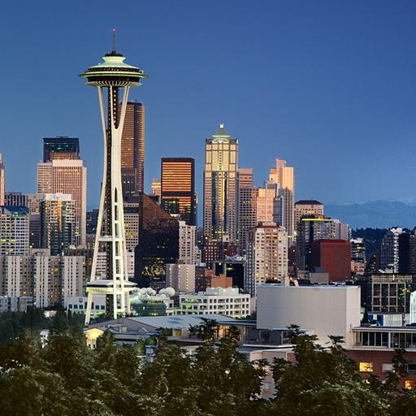
- New York 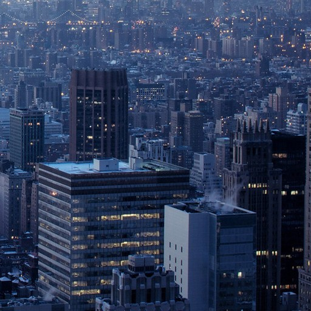
- Ocean 1 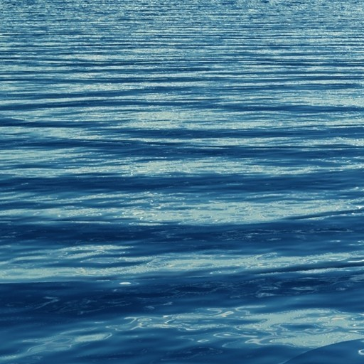
- Ocean 2
- Orange
- Apple & Orange 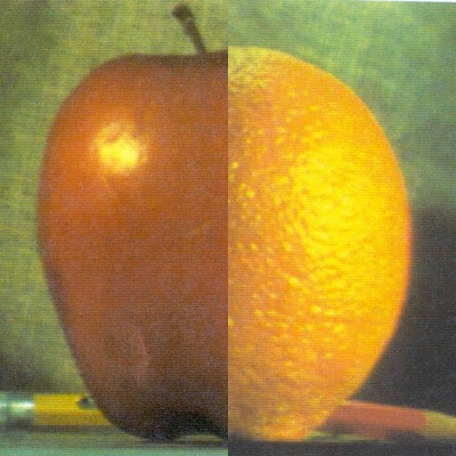


GAUSSIAN PYRAMIDS: Several images were used to create Gaussian and Laplacian pyramids. These images were loaded into the program using the OpenCV library, cv2. Once these images were loaded, the function "GaussianPyr" was created. This function made a a Gaussian pyramid of the images by going through each pixel and decomposing them to make the small pyramids. Then, another image is used to create the larger Gaussian part of te pyramids. LAPLACIAN PYRAMIDS: A similar process to the one done for Gaussian pyramids is done for Laplacian pyramids as well. The difference between the two is that Laplacian pyramids have a Gaussian blur on their images, and then they are up- and sub-sampled.
Apple Images in Gaussian According to Size
- Apple Gaussian 1
- Apple Gaussian 2 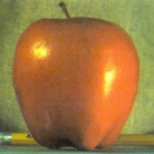
- Apple Gaussian 3
- Apple Gaussian 4 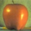
- Apple Gaussian 5

Grass 1 Images in Gaussian According to Size
- Grass 1 Gaussian 1 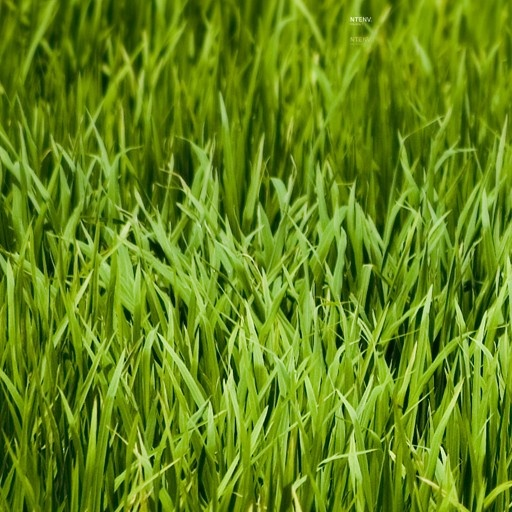
- Grass 1 Gaussian 2 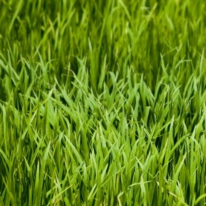
- Grass 1 Gaussian 3 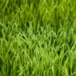
- Grass 1 Gaussian 4 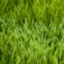
- Grass 1 Gaussian 5 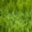
Grass 2 Images in Gaussian According to Size
- Grass 2 Gaussian 1
- Grass 2 Gaussian 2 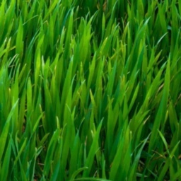
- Grass 2 Gaussian 3 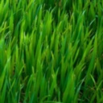
- Grass 2 Gaussian 4 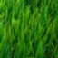
- Grass 2 Gaussian 5 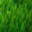
Seattle Images in Gaussian, According to Size
- Seattle Gaussian 1
- Seattle Gaussian 2
- Seattle Gaussian 3
- Seattle Gaussian 4
- Seattle Gaussian 5 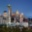
New York Images in Gaussian, According to Size
- NYC Gaussian 1
- NYC Gaussian 2
- NYC Gaussian 3 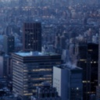
- NYC Gaussian 4
- NYC Gaussian 5 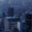
Ocean 2 Images in Gaussian, According to Size
- Ocean 2 Gaussian 1 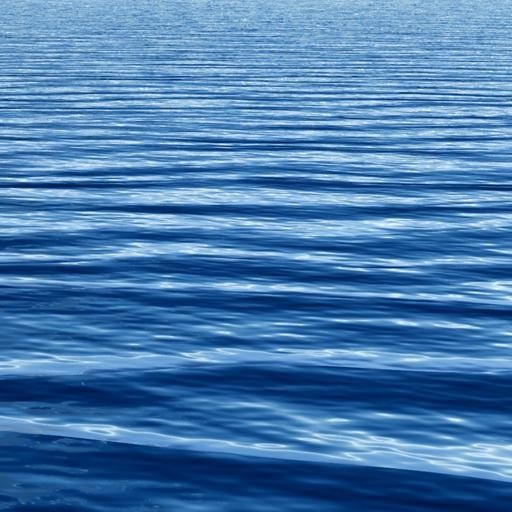
- Ocean 2 Gaussian 2 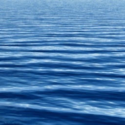
- Ocean 2 Gaussian 3
- Ocean 2 Gaussian 4
- Ocean 2 Gaussian 5 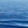
Orange Images in Gaussian, According to Size
- Orange Gaussian 1
- Orange Gaussian 2 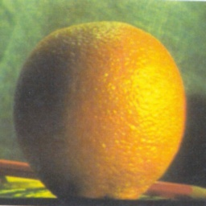
- Orange Gaussian 3 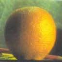
- Orange Gaussian 4 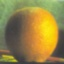
- Orange Gaussian 5 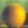

LAPLACIAN IMAGE-BLENDING: Laplacian pyramids are built from two images,then a Gaussian pyramid is built from a selected area. The laplacian pyramids are combined together and reconstructed to combine all the images together. Note: The reason why the edge-detection of the apple and orange is not great is because there is too much noise in the original images.
Apple Images in Laplacian, According to Size
- Apple Laplacian 1 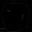
- Apple Laplacian 2 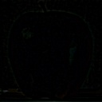
- Apple Laplacian 3 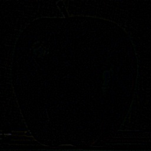
- Apple Laplacian 4 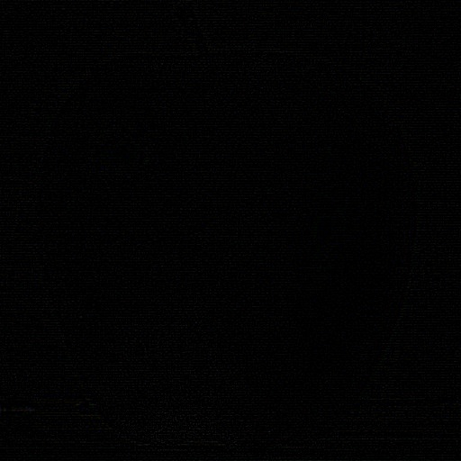
Grass 1 Images in Laplacian, According to Size
- Grass 1 Laplacian 1 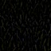
- Grass 1 Laplacian 2 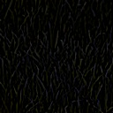
- Grass 1 Laplacian 3 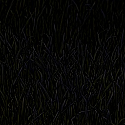
- Grass 1 Laplacian 4 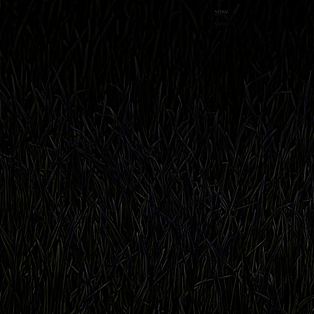
Grass 2 Images in Laplacian, According to Size
- Grass 2 Laplacian 1 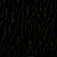
- Grass 2 Laplacian 2 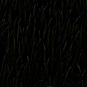
- Grass 2 Laplacian 3 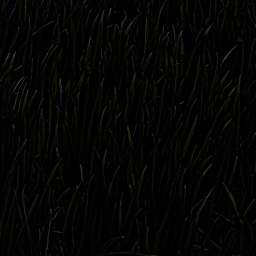
- Grass 2 Laplacian 4 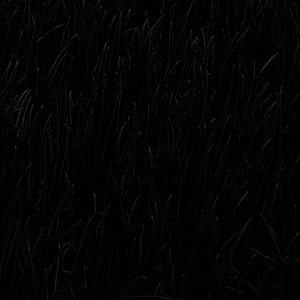
Seattle 1 Images in Laplacian, According to Size
- Seattle 1 Laplacian 1 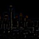
- Seattle 1 Laplacian 2 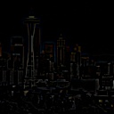
- Seattle 1 Laplacian 3 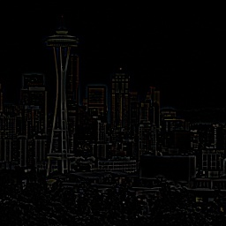
- Seattle 1 Laplacian 4 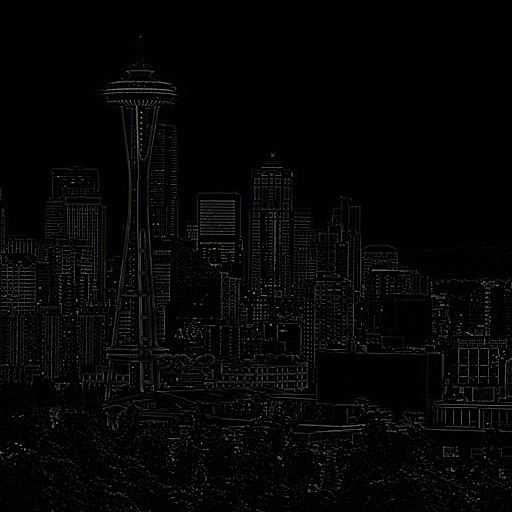
New York Images in Laplacian, According to Size
- NYC Laplacian 1 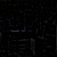
- NYC Laplacian 2 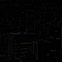
- NYC Laplacian 3 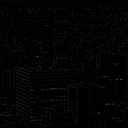
- NYC Laplacian 4 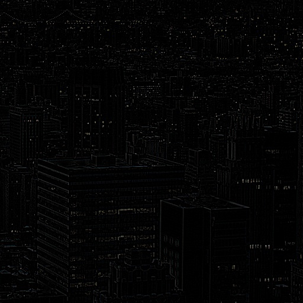
Ocean 2 Images in Laplacian, According to Size
- Ocean 2 Laplacian 1 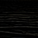
- Ocean 2 Laplacian 2 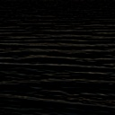
- Ocean 2 Laplacian 3
- Ocean 2 Laplacian 4
Orange Images in Laplacian, According to Size
- Orange Laplacian 1
- Orange Laplacian 2
- Orange Laplacian 3
- Orange Laplacian 4
REBUILT LAPLACIAN: Upsampling the images of apple, grass 1, ocean 1, and Seattle.
- Apple
- Grass 1
- Ocean
- Seattle
Example of Code
This is part of the code that generates a Gaussian pyramid for each of the base images.
%example code
def GaussianPyr(img1, img2):
# generate Gaussian pyramid for img1 and img2
Gaus1 = img1.copy()
gpyr1 = [Gaus1]
Gaus2 = img2.copy()
gpyr2 = [Gaus2]
for i in xrange(5):
Gaus1 = cv2.pyrDown(Gaus1) #decomposes into smaller pyramids
gpyr1.append(Gaus1) #adds the gaussian pyramid to the list
Gaus2 = cv2.pyrDown(Gaus2)
gpyr2.append(Gaus2)